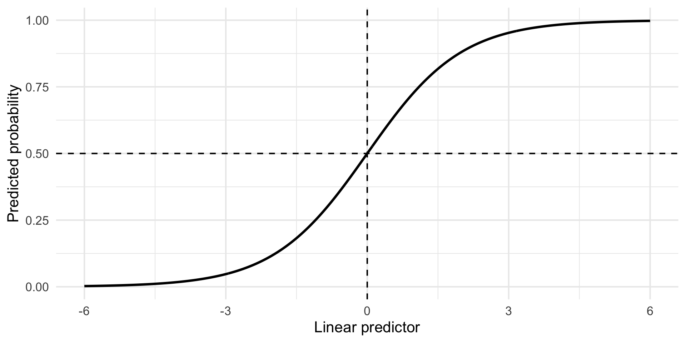
Weeks 5 and 6
In a fictional observational study, 180 adults each report their menstrual pain score for one cycle, weekly physical activity, age, and whether they have endometriosis.
Participants with endometriosis tend to report more pain and less physical activity. Pain scores also vary much more among participants with endometriosis.
Researchers want to determine whether:
Discuss in groups. Develop an analysis plan.
Bernoulli: used to model binary data, \(y\in\{0,1\}\).
\[ y\sim\operatorname{Bernoulli}(p),\qquad f_Y(y)=p^y(1-p)^{1-y}. \]
Poisson: used to model counts, \(y\in\{0,1,2,\ldots\}\).
\[ y\sim\operatorname{Poisson}(\lambda),\qquad f_Y(y)=\frac{e^{-\lambda}\lambda^y}{y!}. \]
Logistic regression specifies
\[y_i\mid x_i\sim\operatorname{Bernoulli}(p_i),\] \[\log\left(\frac{p_i}{1-p_i}\right)=\beta_0+x_i\beta_1,\] \[\implies p_i=\frac{e^{\beta_0+x_i\beta_1}}{1+e^{\beta_0+x_i\beta_1}}.\] There is no separate additive \(\epsilon_i\) term: randomness comes from the Bernoulli distribution.
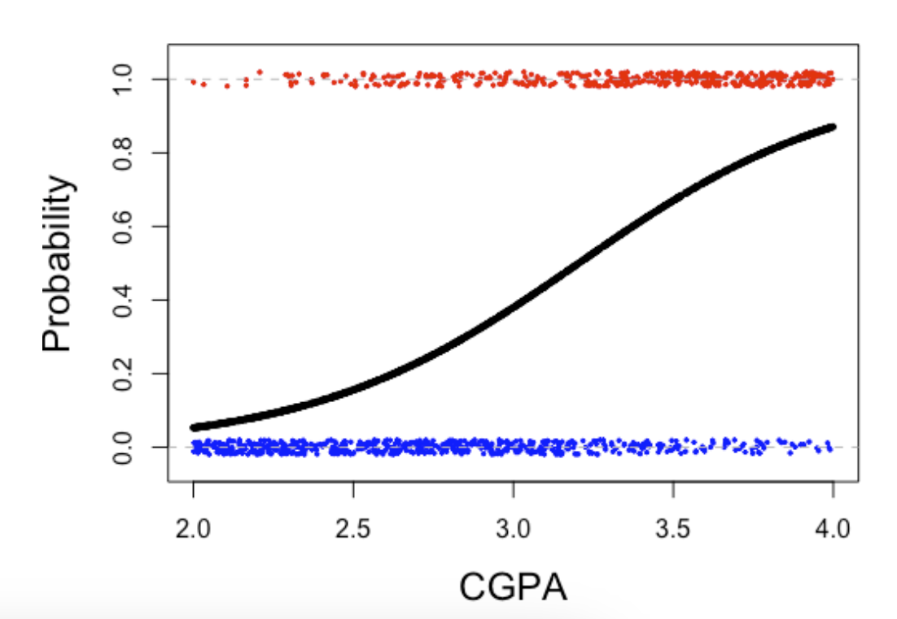
When fitting a logistic regression, it is modelling by \(y_i \sim \text{Bernoulli}(p_i)\) where
\[\log\left(\frac{p_i}{1-p_i}\right)=\beta_0+x_i\beta_1,\]
Interpretation of \(\beta_0\)
Interpretation of \(\beta_1\)
In logistic regression,
\[ p=P(Y=1\mid X_1,\ldots,X_p). \] Then, we can show that
\[ \frac{\partial p}{\partial X_j} = \beta_j p(1-p). \]
The quantity \(p(1-p)\) is largest when \(p=0.5\) where \(p(1-p)=\frac14.\)
So the largest possible slope is approximately \(\frac{\beta_j}{4}.\)
Dividing \(\beta_j\) by 4 gives a quick approximation to the largest possible change in predicted probability associated with a one-unit increase in \(X_j\).

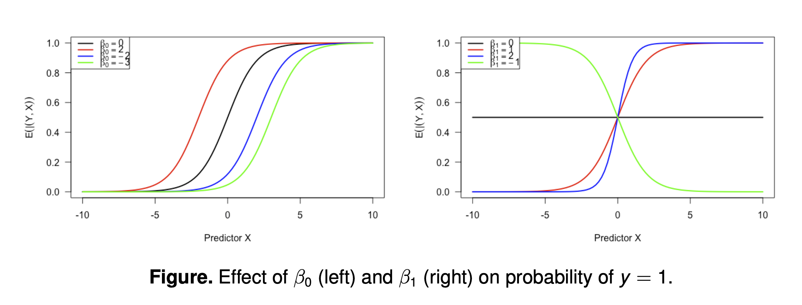
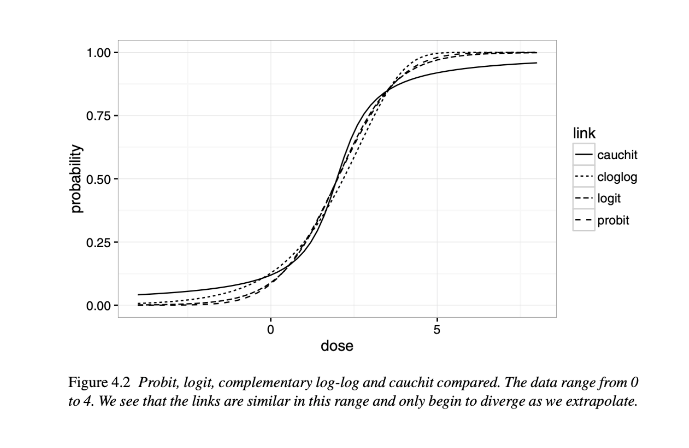
Consider another example: A hospital tracks the number of emergency room visits made by each individual in 2019 (\(y_i\)). How do age, sex, and chronic health conditions affect the number of visits?
Poisson regression specifies
\[y_i\mid\mathbf{x}_i\sim\operatorname{Poisson}(\lambda_i),\] \[\log(\lambda_i)=\mathbf{x}_i^T\boldsymbol\beta \quad\Longrightarrow\quad \lambda_i=\exp(\mathbf{x}_i^T\boldsymbol\beta).\]
When all non-intercept predictors equal zero, i.e. \(x_i = 0\)
\[\log(\lambda_i)=\beta_0\quad\Longrightarrow\quad \lambda_i=e^{\beta_0}.\]
For a one-unit increase in \(x\), holding other predictors fixed,
\[\log(\lambda_i)=\beta_0+x_i\beta_1,\] \[\log(\lambda_i^*)=\beta_0+(x_i+1)\beta_1.\]
Therefore,
\[\beta_1=\log\left(\frac{\lambda_i^*}{\lambda_i}\right),\qquad e^{\beta_1}=\frac{\lambda_i^*}{\lambda_i}.\]
Interpretation of \(e^{\beta_1}\)
A researcher fits the following two models.
Model 1: Predicting Hypertension
\[ \log\left(\frac{p_i}{1-p_i}\right) = -2.1 + 0.35x_i, \]
where \(x\) is age measured in decades.
Model 2: Predicting Number of Migraines
\[ \log(\lambda_i) = 0.8 - 0.20z_i, \]
where \(z\) is hours of weekly physical activity.
Discuss:
In such cases, your model would be misspecified, impacting statistical inference
Lessons from the previous lecture: is the constant variance assumption satisfied?
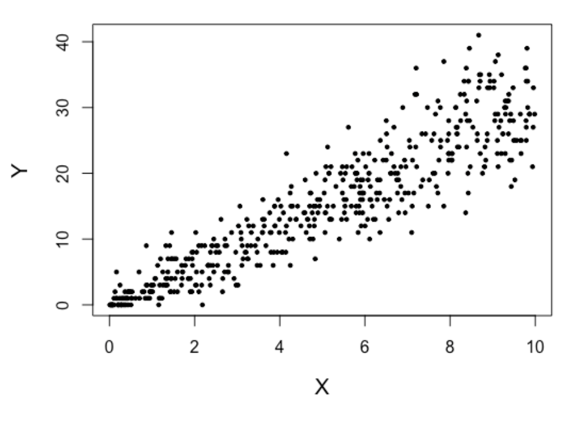
A researcher asks how many cigarettes a participant smoked in the past week.
In such a case, a more flexible model would be in a more complicated form
\[Y_i=\begin{cases} =0,&\text{with probability }1-p,\\ \sim \text{Poisson}(\lambda) &\text{with probability }p. \end{cases}\]
This is an example of the Zero-Inflated Poisson (ZIP) model.
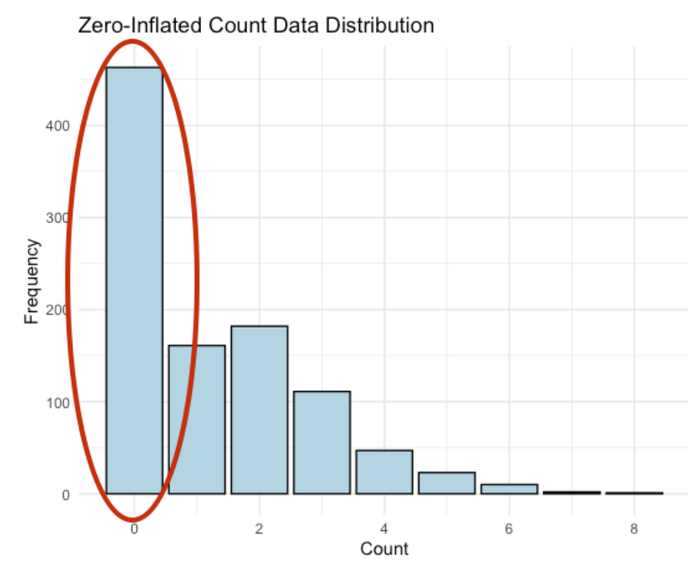
The negative binomial distribution can represent the number of failures before a target number of successes.
\[E(Y)=\mu,\qquad \operatorname{Var}(Y)=\mu+\frac{\mu^2}{k}.\]
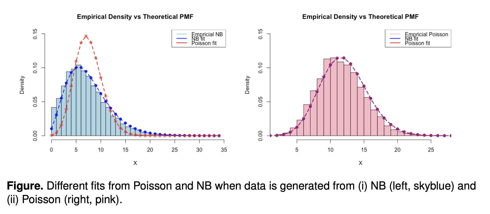
Negative binomial data
Zero-inflated Poisson data
Let’s see if asymptotics help. Repeat the previous simulations with \(n=10000\).
The code takes too long to run live, but when you run the code below, you will find that both Type 1 Errors are still inflated.
Negative binomial data
Zero-inflated Poisson data
The variance assumption remains wrong as \(n\) increases. Model-based standard errors remain too small.
In the linear model with normality assumption, \(\hat{\boldsymbol\beta}_{\mathrm{MLE}}=\hat{\boldsymbol\beta}_{\mathrm{LS}}\).
Logistic and Poisson regression generally have no closed-form coefficient estimates.
We estimate coefficients by maximum likelihood, using numerical optimization.
Inference relies on MLE properties that hold asymptotically, under regularity conditions.
These properties do not guarantee good performance in small samples.
A quick review of the scalar parameter: \(\theta\).
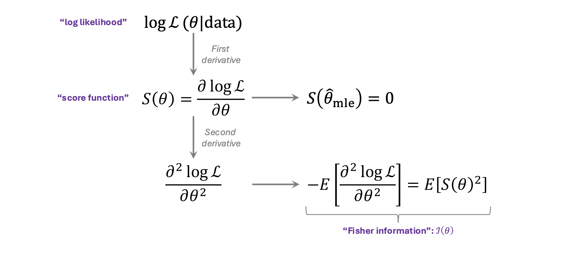
A quick review of the vector parameter: \(\boldsymbol{\theta}\).
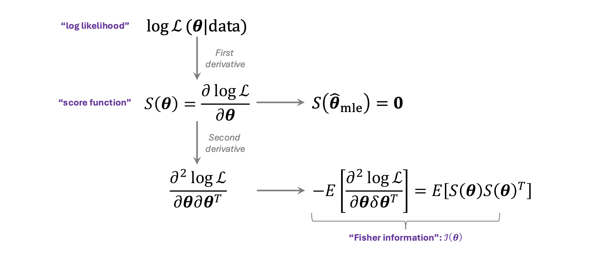
The score has an expected value of 0:
\[E[S(\theta)]=0.\]
The Fisher information is defined by the variance of the score:
\[\mathcal I(\theta)=\operatorname{Var}[S(\theta)] =E\left[\left(\frac{\partial\log L}{\partial\theta}\right)^2\right].\]
and, under some regularity conditions, it is also equivalent to:
\[\mathcal I(\theta)=-E\left[\frac{\partial^2\log L}{\partial\theta^2}\right].\]
\[ \begin{aligned} E[S(\theta)] &=\int \frac{\partial}{\partial\theta}\log f(x;\theta)\,f(x;\theta)\,dx\\ &=\int \frac{1}{f(x;\theta)}\frac{\partial f(x;\theta)}{\partial\theta}f(x;\theta)\,dx\\ &=\int \frac{\partial f(x;\theta)}{\partial\theta}\,dx\\ &=\frac{\partial}{\partial\theta}\int f(x;\theta)\,dx\\ &=\frac{\partial}{\partial\theta}1=0. \end{aligned} \]
Regularity conditions allow us to interchange differentiation and integration.
\(E[S'(\theta)]=-E[S(\theta)^2]\) because
\[ \begin{aligned} 0&=\frac{\partial}{\partial\theta}E[S(\theta)]\\ &=\int\frac{\partial}{\partial\theta}\{S(\theta)f(x;\theta)\}\,dx\\ &=\int S'(\theta)f(x;\theta)\,dx +\int S(\theta)\frac{\partial f(x;\theta)}{\partial\theta}\,dx\\ &=E[S'(\theta)]+E[S(\theta)^2]. \end{aligned} \]
Note that we used
\[S(\theta)=\frac{\partial}{\partial\theta}\log (f(x;\theta))= \frac{1}{f(x;\theta)} \frac{\partial}{\partial\theta}f(x;\theta) \implies \frac{\partial}{\partial\theta}f(x;\theta)=S(\theta)f(x;\theta)\] in the last equation above.
\[\hat{\boldsymbol\theta}_{\mathrm{MLE}} \ \dot\sim\ N\left(\boldsymbol\theta,\mathcal I_n(\boldsymbol\theta)^{-1}\right).\]
We consider a median regression, and formulate it with a Laplace distribution
\[f(y_i\mid\boldsymbol\beta,b)=\frac{1}{2b} \exp\left(-\frac{|y_i-\mathbf x_i^T\boldsymbol\beta|}{b}\right).\]
Then, for fixed \(b\),
\[\ell(\boldsymbol\beta)=-\frac{1}{b}\sum_{i=1}^n |y_i-\mathbf x_i^T\boldsymbol\beta|+C.\]
Maximizing likelihood is equivalent to minimizing the sum of absolute deviations.
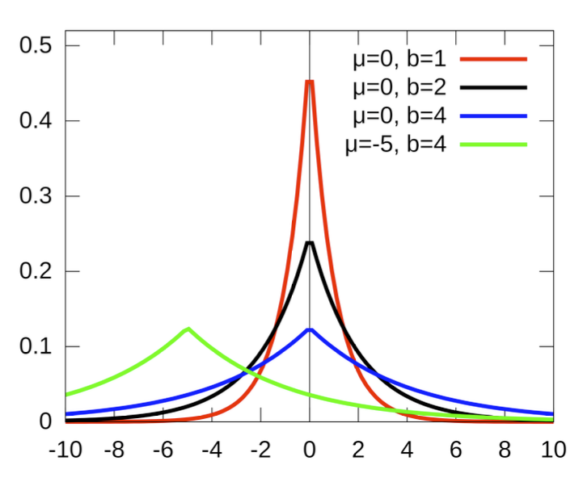
Under this Laplace model, median regression is more efficient than least squares asymptotically.
The observed values are assumed to be independent and to have come from a distribution in the exponential family.
The exponential family is characterized by a pmf or pdf of the (simplified) form:
\[f(y\mid\theta,\phi)=\exp\left\{\frac{y\theta-b(\theta)}{\phi}+c(y,\phi)\right\}.\]
We show that the normal distribution is part of the exponential family.
\[ \begin{aligned} f(y\mid\mu,\sigma^2) &=\frac{1}{\sqrt{2\pi\sigma^2}}\exp\left[-\frac{(y-\mu)^2}{2\sigma^2}\right]\\ &=\exp\left\{\frac{y\mu-\mu^2/2}{\sigma^2} -\frac{y^2}{2\sigma^2}-\frac12\log(2\pi\sigma^2)\right\}. \end{aligned} \]
Therefore,
\[\theta=\mu,\qquad \phi=\sigma^2,\qquad b(\theta)=\frac{\theta^2}{2},\] \[c(y,\phi)=-\frac{y^2}{2\phi}-\frac12\log(2\pi\phi).\]
We show that the Bernoulli distribution is part of the exponential family.
\[ \begin{aligned} f(y\mid\mu)&=\mu^y(1-\mu)^{1-y}\\ &=\exp\left\{y\log\left(\frac{\mu}{1-\mu}\right)+\log(1-\mu)\right\}. \end{aligned} \]
Therefore,
\[\theta=\log\left(\frac{\mu}{1-\mu}\right),\qquad \phi=1,\] \[b(\theta)=\log(1+e^\theta)=-\log(1-\mu),\qquad c(y,\phi)=0.\]
We have the following known properties of the exponential family that come from maximum likelihood.
\[E\left[\frac{y-b'(\theta)}{\phi}\right]=0 \implies E[y]=b'(\theta)\]
\[-E\left[\frac{\partial^2\ell}{\partial\theta^2}\right] =\frac{b''(\theta)}{\phi} =E\left[\left(\frac{Y-b'(\theta)}{\phi}\right)^2\right].\]
which leads to
\[\operatorname{Var}(Y)=\phi b''(\theta).\]
A canonical link makes the linear predictor equal to the natural parameter:
\[\eta=g(\mu)=\theta.\]
The variance function satisfies
\[\operatorname{Var}(Y)=\phi v(\mu),\qquad v(\mu)=b''(\theta).\]
| Distribution | Canonical link \(g(\mu)\) | Mean under canonical link | \(v(\mu)\) | \(\phi\) |
|---|---|---|---|---|
| Normal | \(\mu\) | \(\eta\) | \(1\) | \(\sigma^2\) |
| Bernoulli | \(\log\{\mu/(1-\mu)\}\) | \(e^\eta/(1+e^\eta)\) | \(\mu(1-\mu)\) | \(1\) |
| Poisson | \(\log\mu\) | \(e^\eta\) | \(\mu\) | \(1\) |
| Exponential | \(-1/\mu\) | \(-1/\eta\), \(\eta<0\) | \(\mu^2\) | \(1\) |
Here \(\eta=\mathbf x_i^T\boldsymbol\beta\).
Become familiar with the roles and relationships of
\[g(\cdot),\quad v(\cdot),\quad b(\cdot),\quad\phi,\quad\mu,\quad\theta,\quad\eta.\]
Review differentiation rules, especially the chain rule.
For independent responses \(y_i\) and covariates \(\mathbf x_i\), the data-generating process for \(y_i\) has the following specification:
\[\eta_i=\mathbf x_i^T\boldsymbol\beta.\]
\[g(\mu_i)=\eta_i,\quad \text{where} \quad \mu_i=E(y_i).\]
Assume responses are conditionally independent.
\[y_i\sim\operatorname{Bernoulli}\left(\frac{e^{\mathbf x_i^T\boldsymbol\beta}}{1+e^{\mathbf x_i^T\boldsymbol\beta}}\right).\]
\[y_i\sim\operatorname{Bernoulli}\left(\Phi(\mathbf x_i^T\boldsymbol\beta)\right).\]
\[y_i\sim\operatorname{Poisson}(e^{\mathbf x_i^T\boldsymbol\beta})\].
\[y_i\sim\operatorname{Poisson}(\mathbf x_i^T\boldsymbol\beta)\]
Suppose
\[ y_i\sim\operatorname{Bernoulli}(\mu_i), \qquad \log\left(\frac{\mu_i}{1-\mu_i}\right) = \beta_0+\beta_1x_i. \]
Identify
Question: Why might solving for \(\boldsymbol\beta\) require an iterative algorithm?
Specify the response, predictors, family, and link in glm().
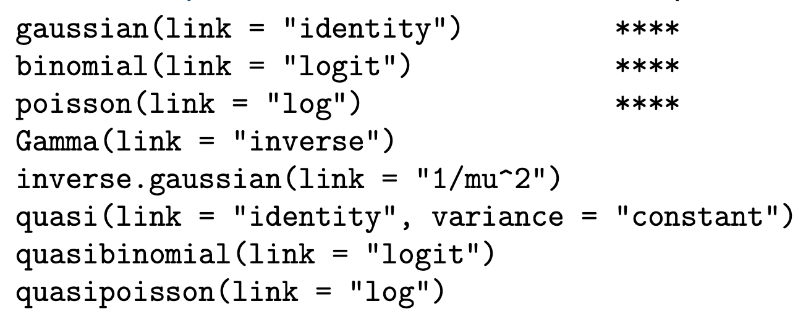
How important is the choice of link?
Derivative of log-likelihood equals to 0:
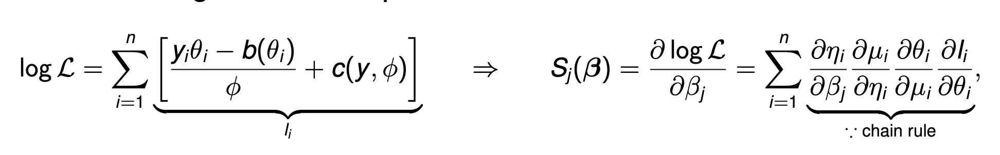
where
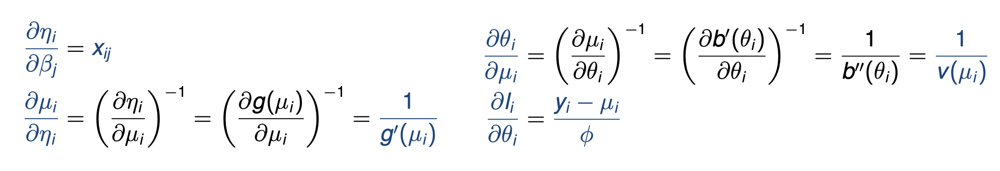
Combining all together:
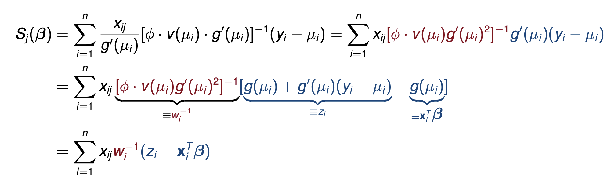
Making the above a matrix form and setting it equal to 0,
\[ \boldsymbol X^T\boldsymbol W^{-1}(\boldsymbol z - \boldsymbol X^T\boldsymbol \beta)=0 \quad \text{with} \quad \boldsymbol W = \text{diag}\{(\phi\cdot v(\mu_i)g'(\mu_i)^2)\} \]
which becomes a weighted least squares problem.
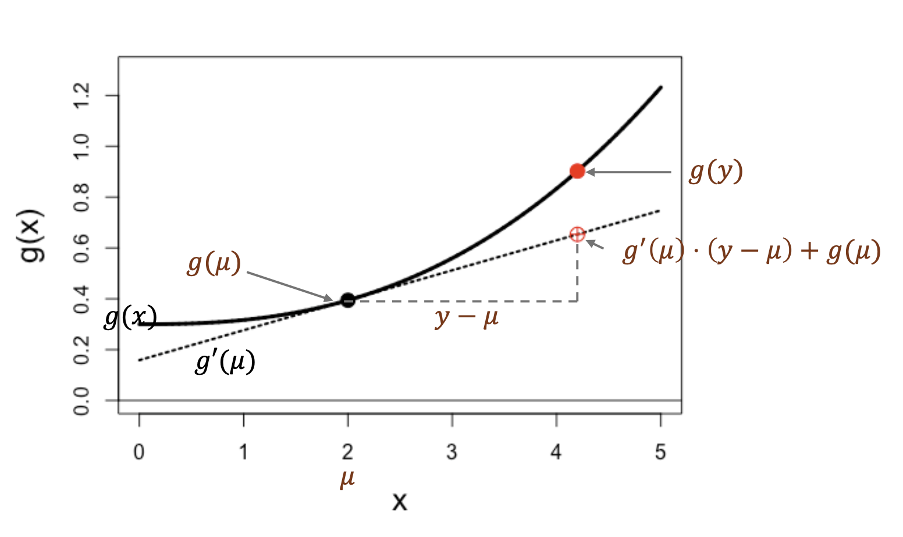
Note: \(z_i\) is a first-order Taylor approximation of \(g(y_i)\) using \(\mu_i\).
IRLS Algorithm
Initialize \(\hat\eta_i\) (Typically, fit a linear regression).
Repeat the following until convergence:
\[\hat\mu_i\leftarrow g^{-1}(\hat\eta_i),\] \[\hat z_i\leftarrow\hat\eta_i+(y_i-\hat\mu_i)g'(\hat\mu_i),\] \[\hat w_i\leftarrow\phi v(\hat\mu_i)[g'(\hat\mu_i)]^2,\] \[\hat{\boldsymbol\beta}\leftarrow (X^T\hat W^{-1}X)^{-1}X^T\hat W^{-1}\hat{\mathbf z},\] \[\hat{\boldsymbol\eta}\leftarrow X\hat{\boldsymbol\beta}.\]
Both the working response (\(\hat z_i\)) and weights (\(\hat w_i\)) are updated each iteration.
The score function is expressed by
\[\mathbf S(\boldsymbol\beta)=\sum_{i=1}^n \frac{\partial\mu_i}{\partial\boldsymbol\beta} \frac{y_i-\mu_i}{\phi v(\mu_i)}.\]
The Fisher information matrix is
\[ \begin{aligned} \mathcal I(\boldsymbol\beta) &=\sum_{i=1}^n\frac{1}{\phi v(\mu_i)} \frac{\partial\mu_i}{\partial\boldsymbol\beta} \left(\frac{\partial\mu_i}{\partial\boldsymbol\beta}\right)^T\\ &=\sum_{i=1}^n\mathbf x_i \{\phi v(\mu_i)[g'(\mu_i)]^2\}^{-1}\mathbf x_i^T\\ &=X^TW^{-1}X. \end{aligned} \]
Under regularity conditions, \(\hat{\boldsymbol\beta}\) is approximately normal:
\[\hat{\boldsymbol\beta}\ \dot\sim\ N\left(\boldsymbol\beta, \mathcal I(\boldsymbol\beta)^{-1}\right).\]
Its asymptotic covariance is
\[\operatorname{aVar}(\hat{\boldsymbol\beta})=(X^TW^{-1}X)^{-1}.\]
Since \(\boldsymbol W\) consists of unknown parameters, we replace \(\boldsymbol \beta\) with \(\boldsymbol{\hat{\beta}}_{MLE}\) to be used in statistical inference (\(\boldsymbol{\hat{W}}\))
\[ H_0:\underbrace{\beta_1 = \cdots = \beta_p = 0}_{\text{i.e., } \mu_i = \mu} \] Procedure:
\[T_{\mathrm{LRT}}=-2[\ell(\hat{\boldsymbol\beta}_{\mathrm{full}}) -\ell(\hat{\boldsymbol\beta}_{\mathrm{null}})].\] 4. \(T_{\mathrm{LRT}}\ \dot\sim\ \chi_p^2\) asymptotically (i.e. as \(n \rightarrow 0\)) when the null hypothesis is true
n <- 20
p_values <- numeric(10000)
for (sim in seq_along(p_values)) {
x1 <- rnorm(n)
x2 <- runif(n)
y <- rbinom(n, 1, 0.3)
fit0 <- glm(y ~ 1, family = binomial())
fit1 <- glm(y ~ x1 + x2,
family = binomial())
stat <- 2 * as.numeric(
logLik(fit1) - logLik(fit0))
p_values[sim] <- pchisq(stat, df = 2,
lower.tail = FALSE)
}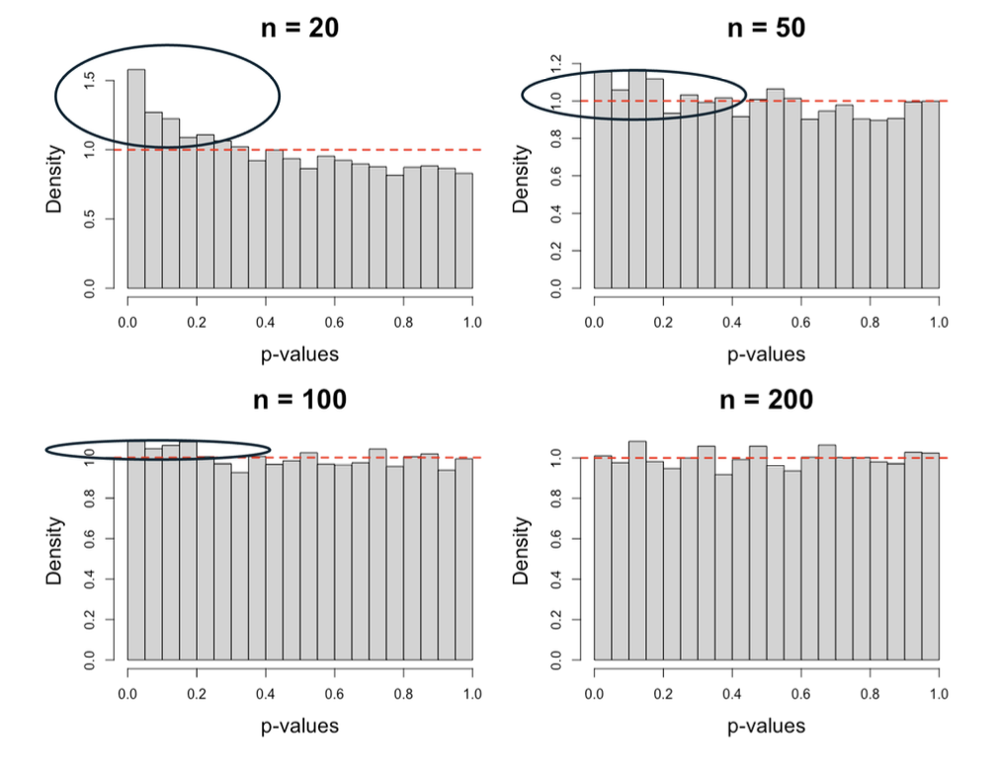
\[ H_0:\underbrace{\beta_1 = \cdots = \beta_p = 0}_{\text{i.e., } \mu_i = \mu} \]
Procedure:
The Wald test requires fitting a full model.
Wald and likelihood ratio tests are asymptotically equivalent under the usual regularity conditions, but can behave differently in small samples.
n <- 20
p_values <- numeric(10000)
for (sim in seq_along(p_values)) {
x1 <- rnorm(n)
x2 <- runif(n)
y <- rbinom(n, 1, 0.3)
fit <- glm(y ~ x1 + x2,
family = binomial())
b <- coef(fit)[2:3]
V <- vcov(fit)[2:3, 2:3]
stat <- as.numeric(t(b) %*% solve(V, b))
p_values[sim] <- pchisq(stat, df = 2,
lower.tail = FALSE)
}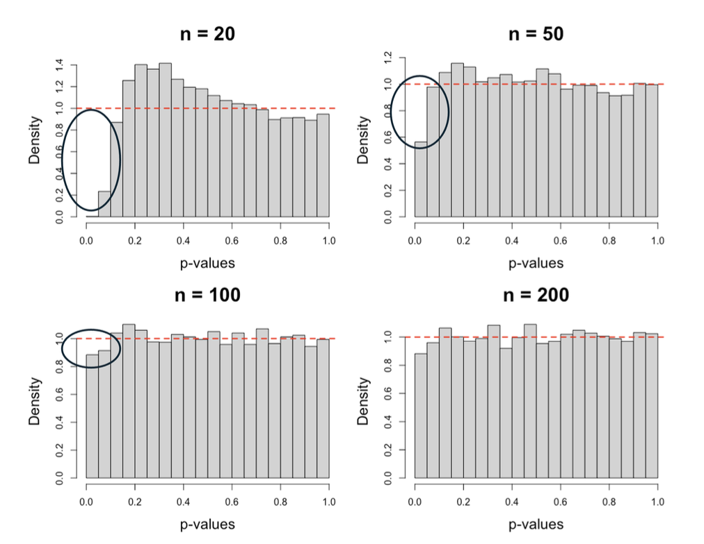
In linear regression, residuals help assess assumptions related to \(\epsilon_i\)s
In non-Gaussian GLMs, what specific assumptions are we assessing?
The distributional assumptions could be checked indirectly by studying the mean-variance relationship because
Still, we need to define a good residual term for GLM so that we can evaluate such assumptions.
Pearson (‘standardized’) residuals:
\[r_i^P=\frac{y_i-\hat\mu_i}{\sqrt{v(\hat\mu_i)}}.\]
Deviance residuals:
\[r_i^D=\operatorname{sign}(y_i-\hat\mu_i) \sqrt{2\{\ell_i(y_i)-\ell_i(\hat\mu_i)\}}.\]
For a fitted Poisson regression,
\[r_i^P=\frac{y_i-\hat\mu_i}{\sqrt{\hat\mu_i}}.\]
The deviance residual is
\[r_i^D=\operatorname{sign}(y_i-\hat\mu_i) \sqrt{2\left[y_i\log\left(\frac{y_i}{\hat\mu_i}\right)-(y_i-\hat\mu_i)\right]}.\]
We can look at the scatterplot between the deviance residuals and \(\mathbf x_i^T\hat{\boldsymbol\beta}\) to check if there is any non-linear pattern.
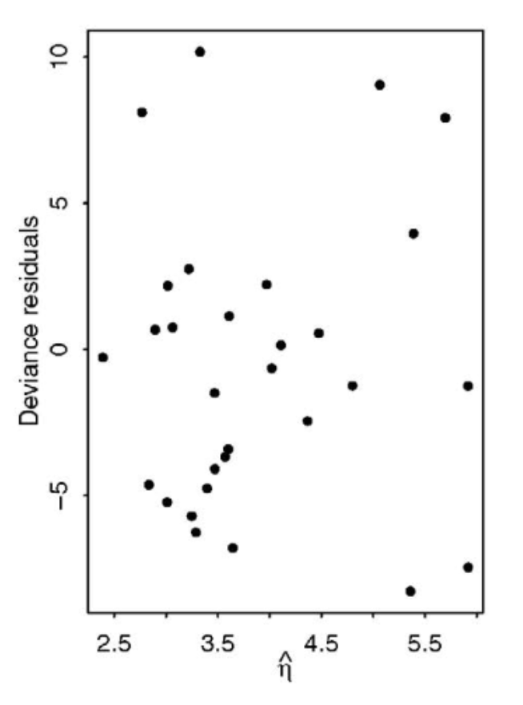
The assumed distribution imposes a mean–variance relationship, so we may perform exploratory analyses to understand overdispersion.
Overdispersion is when the data has more variance than the statistical model expects it to have.
For example, in Poisson, \(\hat\mu_i\) and \((y_i-\hat\mu_i)^2\) characterize the mean and variance. We plot both to compare and look to see if the points are randomly scattered around the 45-degree line.
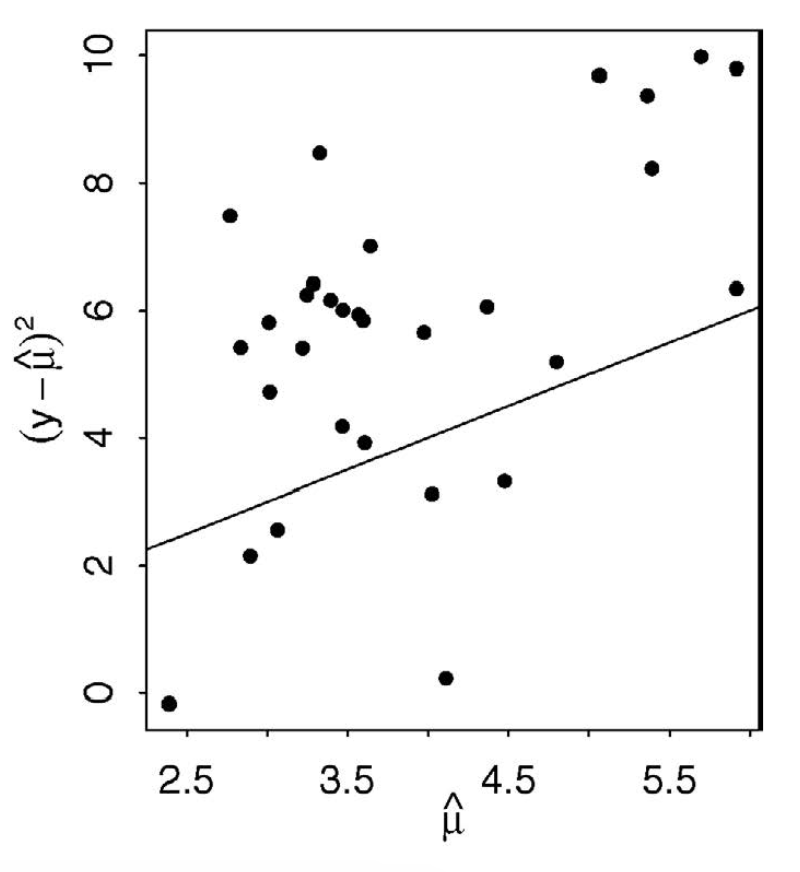
Two useful summaries are
Both \(D\) and \(X^2\) follow \(\chi^2_{n-p-1}\) asymptotically when the mean-variance relationship imposed in your DGP is met.
Recall the motivating question at the start of last lecture: Should we use logistic or Poisson regression just because the data type is binary or count?
Strong distributional assumptions (in variance) specifying expected value and variance
Note: When using the normal distribution, there are two separate parameters for the mean and variance.
We may perform exploratory data analysis to check if this assumption is true.
Suppose we want to compare the number of infections across two regions.
| Region | Population | Number of infections |
|---|---|---|
| A | 10,000 | 100 |
| B | 1,000 | 50 |
Region A has more infections than Region B, but Region B has a higher infection rate.
The population size determines how much exposure each region has:
More people \(\rightarrow\) more opportunities for infections to occur.
If we model only the raw count, differences in exposure can be mistaken for differences in the underlying event rate.
For count data, observations may have different amounts of exposure.
For example:
If \(u_i\) is the exposure, we can model
\[ \log(\mu_i) = \log(u_i) + \beta_0+\beta_1X_{i1}+\cdots+\beta_pX_{ip}. \]
The term \(\log(u_i)\) is called an offset.
Equivalently,
\[ \log\left(\frac{\mu_i}{u_i}\right) = \beta_0+\beta_1X_{i1}+\cdots+\beta_pX_{ip}. \]
So we are modelling an event rate per unit exposure, rather than simply the total count.
One problem we might face when fitting a logistic regression model is separation.
Complete separation occurs when a predictor, or combination of predictors, perfectly separates the two outcome classes.
For example:
In this case, the likelihood keeps increasing as the magnitude of the coefficient increases:
\[ |\hat{\beta}_1| \rightarrow \infty. \]
Therefore, there is no finite MLE for \[\beta_1\].
What might we see in practice?
What do we do?
DO NOT just interpret the huge coefficient
Use a method that stabilizes the estimate
Quantifying goodness of fit
From the exponential family, it is shown that
\[\operatorname{Var}(y_i)=\phi v(\mu_i) \implies \phi = \frac{\operatorname{Var}(y_i)}{v(\mu)}.\] where \(\phi = 1\) in the Bernoulli or Poisson case.
We may estimate the dispersion parameter, \(\phi\), by using the \(X^2\) statistic because
\[ \frac{X^2}{\phi} \sim \chi^2_{n-p-1} \implies \mathbb{E}\left[\frac{X^2}{n-p-1}\right] = \phi \implies \hat\phi=\frac{X^2}{n-p-1} \]
Quantifying goodness of fit
With overdispersion:
Similarly, your Type 1 error would be overly conservative when underdispersion occurs.
Use a more flexible DGP (i.e. where mean and variance are specified by two parameters).
MASS::glm.nb().The variance of \(\boldsymbol{\hat{\beta}}\) is \(\boldsymbol X^T\boldsymbol W\boldsymbol X\), with \(\phi = 1\) in logistic and Poisson GLM
We know that \(\hat\phi > 1\) when overdispersion occurs
Key Idea: the variance of \(\boldsymbol{\hat{\beta}}\) is replaced by \(\hat\phi \cdot (\boldsymbol X^T\boldsymbol W\boldsymbol X)\) with \(\hat\phi\) estimated from the GLM fit (Pearson \(X^2 statistic\))
Does not change any \(\boldsymbol{\hat{\beta}}\), but provides a more robust variance estimate.
In R: quasipoisson(link = "log") or quasibinomial(link = "logit") in glm() to implement Quasi-likelihood.
Welcome to robust inference!
Lars Peter Hansen received the 2013 Nobel Prize in Economics for contributions including GMM.
Generalized linear models extend linear regression to responses such as binary and count data by specifying a response distribution, a linear predictor, and a link function.
GLM coefficients are typically estimated by maximum likelihood, often using an iterative procedure such as iteratively reweighted least squares.
Statistical inference in GLMs relies largely on asymptotic results; Wald tests and likelihood ratio tests can be used to assess covariate effects.
Model checking requires assessing both the mean structure and the distributional mean–variance relationship using residuals and goodness-of-fit measures.
When assumptions such as the Poisson variance relationship are violated, alternatives such as negative binomial models, zero-inflated models, or quasi-likelihood may provide more appropriate modelling or inference.
Announcements: Next week is the midterm (Friday, October 23rd) in room FE 230 from 2:10pm – 4:10pm